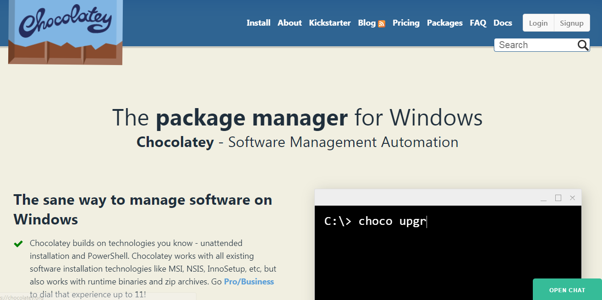
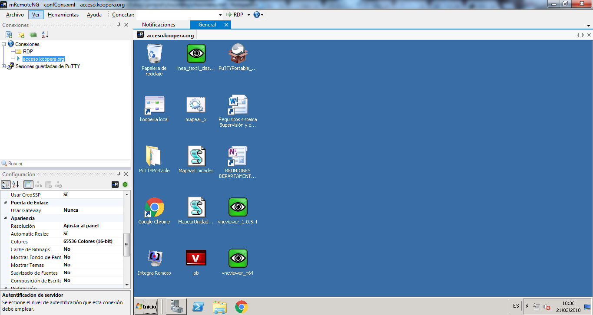

Introducción

Chocolatey es una aplicación para la consola de MS Win que recuerda al gestor de paquetes de Linux, permite de forma automatizada instalar o actualizar de forma desatendida aplicaciones de Windows como paquetes (actualmente ya cuenta con 5517 paquetes).
Instalando Chocolatey
Abrimos PowerShell como administrador y ejecutamos el siguiente comando (ver en la Web oficial)
PS> Set-ExecutionPolicy Bypass -Scope Process -Force; iex ((New-Object System.Net.WebClient).DownloadString('https://chocolatey.org/install.ps1'))
Instalar aplicaciones
Instalar aplicaciones es super sencillo, por ejemplo para instalar mRemoteNG (gestor de conexiones SSH, RDP, VNC y otros) ejecutamos:
PS> choco install mremoteng
Cholatey descarga el instalador MSI v1.75.7012 mRemoteNG de GitHub y comienza su instalación de forma automática.
En un par de minutos ya está instalado y podemos ejecutar la aplicación.

Actualizar una aplicación
Choco también sirve para actualizar las aplicaciones. Digamos que quieres actualizar Skype. Abre la terminal y escribe:
PS> choco install skype
Buscando una aplicación
Para husmear entre los 5517 y ver todo lo que ofrece usamos el comando search:
PS> choco search
Cuando algo falla en Chocolatey
Podemos consultar el fichero de logs, en mi computadora ubicado en C:\ProgramData\chocolatey\logs\chocolatey.log.
Instalando un servidor SSH

Vamos a instalador un servidor SSH para poder ejecutar comandos remotos en una máquina, usamos el instalador universal de OpenSSH para MS Win.
Usamos la opción -y (o --yes para confirmar todos los pasos de la instalación) del comando install y pasamos dos parametros al propio OpenSSH.
- /SSHServerFeature: Instala como servicio en el puerto 22.
- /SSHAgentFeature: Instala como agente del servicio.
PS> choco install -y openssh -params '"/SSHServerFeature /SSHAgentFeature"'
Chocolatey GUI: Sistema gráfico
Si queremos aunque no sea necesario podemos instalar el gestor gráfico de paquetes Chocolatey para escritorio:
PS> choco install chocolateygui
Aplicaciones interesantes
- Telegram: Mi sistema de mensajería preferido.
Enlaces externos
- Wiki de Chocolatey en GitHub: Recursos, enlaces y guia básica de uso, mención especial a los comandos disponibles.